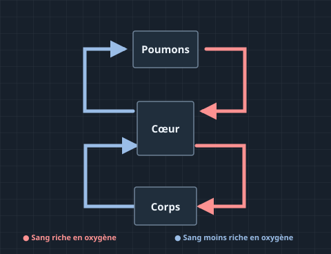
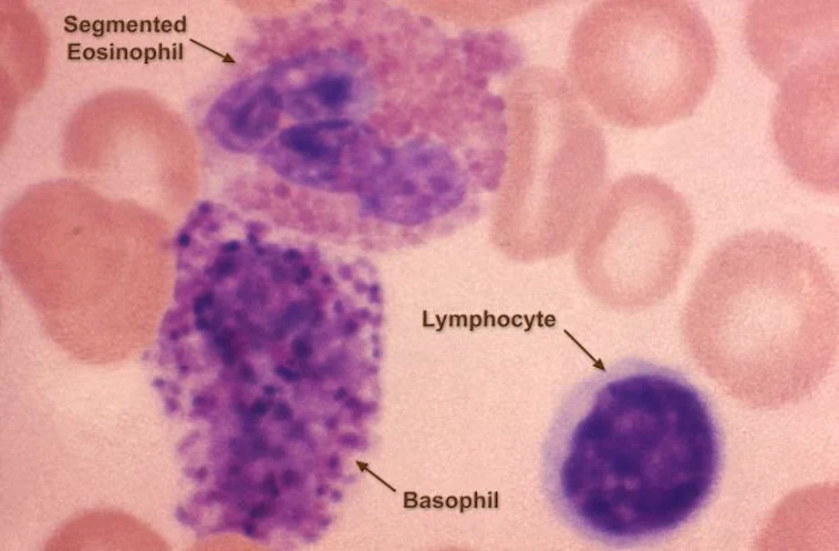
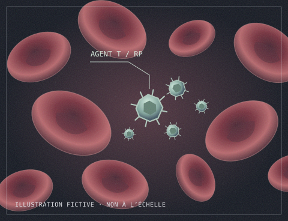

AUTHENTIFICATION DU PERSONNEL
Portail Umbrella
Saisis ton matricule et ton code RP pour accéder à ta campagne.
Ouvrir l’intranet dans un nouvel ongletUMB.NET / DIRECTION SUPRÊME
Couvre-feu en cours
Levée d’urgence · niveau 5
UMB.NET / SÉCURITÉ DES TERMINAUX
PDA neutralisé
DIRECTION SUPRÊME / N04H
Maintenance générale
Les connexions, les communications et les opérations RP sont suspendues. Les données sont conservées et l’intranet rouvrira automatiquement.
Fin de l’arrêt d’urgence (heure de Paris) :
ACCÈS VALIDÉ
Initialisation
Ouverture du canal interne…
05 S
Accès bloqué Séquence Veronica
Trois échecs d’authentification consécutifs ont été enregistrés. Le terminal a été isolé et ne peut plus ouvrir de session tant qu’il n’a pas été réinitialisé.
Simulation RP. Aucun rapport réel ni donnée personnelle transmis.
Our business is life itself.
TERMINAL UC–01 / FIN DE SESSION
DOSSIER DU PERSONNEL / SESSION AUTORISÉE
REINE ROUGE / N04H
- Matricule
- Habilitation
- Division / fonction
REDCLIFF / DIVISION RECHERCHE
Registre des agents
Dossiers par nature de l’agent : origines, cas documentés, observations et distinctions.
Planches d’observation : sang, circulation et agent fictif



Aucune fiche ne correspond. Essaie un autre terme ou sélectionne « Tous les agents ».
Archives de fiction : les fiches peuvent révéler l’intrigue. Les observations servent au RP ; elles ne décrivent pas de mécanismes médicaux réels.